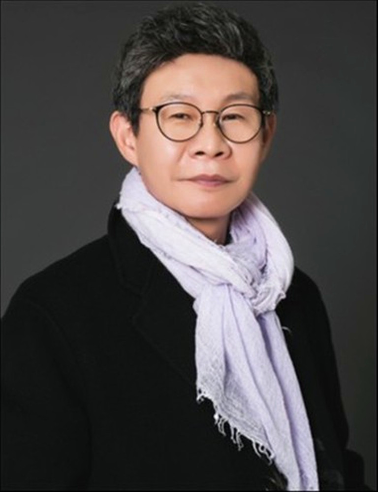

김재동, 金在童
물려받은 자산도 동업자도 없이 시작했습니다. 남들이 어렵다고 비켜 간 분야를 골라 들어가는 방식으로 반세기를 지나왔습니다.

동서캐피탈 창업주 · 동서벤처캐피탈 대표
부동산 밸류업 · 여신 · 채권 투자
시장을 읽은 사람이 아니라,
시장을 만들어 온 사람
1955년 전라남도 영암에서 태어났습니다. 물려받은 사업이나 자산 없이 스무 살 무렵부터 일을 시작해, 업종을 옮겨 다니며 23개의 사업을 직접 세우고 운영했습니다. 매번 남들이 이미 자리를 잡은 시장 대신 아직 형태가 없는 시장을 골랐습니다.
1993년 동서캐피탈을 세우면서 여신업에 들어갔습니다. 13개 지점에 130명 규모로 키운 뒤, 1997년에는 동서벤처캐피탈을 통해 유망 기업 36곳에 투자했습니다. 2000년대 들어서는 대부와 채권 쪽으로 옮겨 개인회생채권과 신용회복채권 시장에서 자리를 잡았고, 이를 기반으로 한미금융그룹을 출범시켰습니다.
2014년경 NPL 특수물건 시장에 들어간 것이 전환점이었습니다. 유치권과 법정지상권이 얽혀 있어 아무도 매입하지 않던 물건을 직접 현금으로 사들이고, 법적 분쟁을 하나씩 정리해 다시 시장에 내놓았습니다. 이 방식으로 5년 만에 자산 규모를 1조 2천억원까지 키웠다는 것이 언론이 기록한 내용입니다.
2024년 HMK홀딩스를 세우며 다시 시작했습니다. 이번에는 직접 사고파는 대신, 특수물건 정보와 해결 역량을 플랫폼으로 열어놓는 쪽을 택했습니다. 70세가 된 지금도 가장 먼저 출근하고 가장 늦게 퇴근한다는 원칙을 지키고 있습니다.
그를 설명하는 여섯 가지
기반이 되어줄 자본도 인맥도 없이 출발했습니다. 지금 가진 것은 전부 사업으로 만든 것입니다.
지금까지의 사업을 모두 지분 100%로 운영했습니다. 판단이 흔들리지 않게 하려는 선택이었습니다.
현장에 가장 먼저 나오고 가장 늦게 남습니다. 지시로 되는 일과 직접 봐야 아는 일을 구분합니다.
이미 붐비는 시장에는 들어가지 않습니다. 어렵고 복잡해서 비어 있는 자리를 먼저 봅니다.
14만건이 넘는 권리분석 기록은 책상에서 만든 데이터가 아니라 현장을 다닌 결과입니다.
돈 버는 기술로 끝내지 않고, 위기를 기회로 바꾸는 방법을 사람에게 남기는 것을 다음 일로 삼고 있습니다.